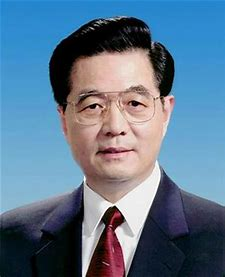

在中国革命、建设和改革的各个历史时期，在马克思主义中国化的两次历史性飞跃中，从毛泽东思想到中国特色社会主义理论体系，构建了中国共产党指导思想发展史上前后接续、继承发展、与时俱进、高度统一的恢宏理论大厦，堪称马克思主义发展史上的奇观。只有坚持实事求是的思想方法，贯彻唯物主义辩证法的“两点论”，全面辩证地看问题，才能正确地把握毛泽东思想同中国特色社会主义理论体系的关系。
毛泽东
首先，要充分认识两者的内在联系和共同的本质特征。毛泽东思想和中国特色社会主义理论体系，都是马克思主义同中国实际相结合的产物，都是在反对“左”右倾思潮的过程中产生的，都有着共同的思想路线，这就是实事求是的思想路线；都是在深刻把握时代特征和基本国情，努力推动马克思列宁主义同中国实际相结合的过程中产生的，都有着共同的哲学基础特别是认识论基础，这主要就是唯物辩证法和历史唯物主义，以及实践第一的观点和群众路线；就建设而言，都处在社会主义初级阶段，都有着共同的发展目标，这就是把中国建设成为社会主义现代化国家；都有着共同的制度基础，始终坚持社会主义的基本经济制度，坚持人民民主专政的国体和以人民代表大会制度、中国共产党领导下的多党合作政治协商制度、民族区域自治制度为主体的社会主义基本政治制度，坚持以马克思主义意识形态为指导的社会主义基本文化制度；在社会主义经济建设、政治建设、文化建设、社会建设等方面，都坚持共同的基本原则，即经济建设上坚持以公有制为主体、努力实现共同富裕，政治建设上坚持党的领导、人民当家做主和依法治国相统一，文化建设上坚持“二为”方向和“双百”方针，社会建设上坚持正确处理人民内部矛盾以团结调动一切积极因素，等等。看不到这些共同的思想基础和本质特征，看不到思想之间在发展中的吸收借鉴与交汇融合，把中国特色社会主义理论体系看作是同毛泽东思想完全不同的两回事，甚至以为是互相矛盾，这实际上是在孤立地看问题。
邓小平
其次，要充分认识两者的重大变化和不同特点。这些重大变化和不同特点，是马克思主义中国化处于不同发展阶段的客观反映，是由时代特征和历史条件的阶段性变化带来的必然结果。中国特色社会主义理论体系，是在新的时代和历史条件下对毛泽东思想的继承发展，使毛泽东思想开创的马克思主义中国化进程进入到一个崭新的发展阶段。
周恩来
一是时代特征的变化。中国特色社会主义理论体系是在和平与发展成为时代主题的历史条件下逐步形成和发展起来的。它科学地回答了当代时代特征、国际格局、开放战略、外交战略、国防战略等一系列重大问题，为中国特色社会主义在世界社会主义运动处于低潮条件下的趋利避害、和平发展指明了方向。
江泽民
二是发展阶段的变化。中国特色社会主义理论体系是十一届三中全会实现历史性转折后，在我国改革开放和现代化建设进入新时期的实践中，逐步形成和发展起来的。新时期最鲜明的特点是改革开放，最显著的成就是快速发展，最突出的标志是与时俱进，使中国人民的面貌、社会主义中国的面貌、中国共产党的面貌发生了历史性变化。作为新时期全部历史经验结晶的中国特色社会主义理论体系，这个理论体系在建设中国特色社会主义的思想路线、发展道路、发展阶段、发展战略、根本任务、发展动力、依靠力量、领导力量和根本目的等问题上，形成了一系列独创性的重大理论观点，系统回答了中国这样一个十几亿人口的发展中大国如何摆脱贫困、加快实现现代化、巩固和发展社会主义的一系列重大问题。

胡锦涛
三是理论认识的深化。中国特色社会主义理论体系紧紧围绕什么是社会主义、怎样建设社会主义，建设什么样的党、怎样建设党，实现什么样的发展、怎样发展这三大问题展开，用一系列紧密联系、相互贯通的新思想、新观点、新论断，深化和丰富了对共产党执政规律、社会主义建设规律、人类社会发展规律的认识。例如，关于改革开放是发展中国特色社会主义的强大动力的思想，关于建立社会主义市场经济体制的思想，关于公有制为主体、多种所有制经济共同发展是我国社会主义初级阶段的基本经济制度的思想，关于推动科学发展、促进社会和谐的思想，关于社会主义物质文明、政治文明和精神文明协调发展的思想，关于正确处理改革发展稳定的思想，关于中国特色新型工业化道路的思想，关于建设社会主义新农村的思想，关于把坚持独立自主同参与经济全球化结合起来的思想，关于建设社会主义法治国家的思想，关于基层群众自治制度建设的思想，关于提高国家文化软实力、兴起社会主义文化建设新高潮的思想，关于社会和谐是发展中国特色社会主义的基本要求的思想，关于走中国特色的富国和强军之路的思想，关于加强党的执政能力建设和先进性建设的思想，关于把推进中国特色社会主义伟大事业同推进党的建设新的伟大工程结合起来的思想，等等。这些都是对马克思主义理论的重大贡献，体现着与时俱进这一马克思主义的理论品质。看不到时代主题和历史方位的重大变化，看不到毛泽东思想开创的马克思主义中国化进程出现了新的质的飞跃，进入到了中国特色社会主义理论体系的发展阶段，这实际上是在静止地看问题。 总之，中国特色社会主义理论体系，源于毛泽东思想，坚持毛泽东思想，又根据时代特征、人民实践和全党集体智慧创造性地发展了毛泽东思想。中国特色社会主义理论体系沿着毛泽东思想开辟的马克思主义中国化道路，充分吸收了毛泽东思想的宝贵理论财富（包括活的灵魂和各个组成部分等），不断丰富、发展、完善，实现了指导思想上的与时俱进。在中国特色社会主义理论体系中，将从毛泽东思想中吸取的宝贵财富与从改革开放伟大实践中总结提炼的新鲜内容有机地融为一体，将坚持与继承、创新与发展有机地融为一体，集中体现了马克思列宁主义、毛泽东思想的当代价值和指导作用，集中体现了马克思列宁主义、毛泽东思想在当代中国的运用和发展。党的十七大报告说得好，“在当代中国，坚持中国特色社会主义理论体系，就是真正坚持马克思主义”。这是真理，也是客观事实。